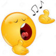

What do kids do?
Kids play a lot, talk a lot, learn a lot.
Kids learn about self and others. Kids learn to explore and change the world.
กข aims to support kids in their digital endeavor.
อ่าน
The reader tool allows selecting a book from a book-shelf online. (Offline, click on [browse] button and navigate to ../KoKho/book/ folder then select a file to read) A preview of content will be shown. When the 'อ่าน' button is clicked, the content of the book is display in easy to read large prints. When a word or phrase is touched or clicked on, reader aid is displayed with alphabets, vowels and tone marks in different colors. When a syllable is selected, a suggested sound-like is spelled out. (A click in white area will dismiss this aid.)
At present the tool only offers visual aid. Audio aid is planned.
เขียน
 The writer tool is a also a game to write as many words as we can from a given set of letters, vowels and tone marks --randomly selected -- all of these when clicked on will give audio aid. Each word written is saved in another box, so that the results can be shared among friends for comments and verification.
The writer tool is a also a game to write as many words as we can from a given set of letters, vowels and tone marks --randomly selected -- all of these when clicked on will give audio aid. Each word written is saved in another box, so that the results can be shared among friends for comments and verification.
The words are written by drag-and-drop -- drag a letter from the top box to the second box in order as we would type on a keyboard. When the second button is clicked the written word is copied into the third box. On some browsers (Google Chrome for example) this drag-and-drop works well on PC but not so well on some mobile phones and browsers. We are looking into it.
We also welcome help.
ร้อง

The singer tool is a simple aid to learn music notes and to recognize the musical pitches (as recognized internationally). A part of a piano keyboard on the colorful music sheet is also provided. The colors of the rainbow is applied to notes in the same order (ROYGBIV : Red Orange Yellow Green [sky]Blue Indigo Violet). The music pitch rises higher along the (CDEFGAB) scale.
We can play simple songs with this key board.
We also welcome help as we are not really 'musicians'.
เต้น รำ ฟ้อน
A number of 'moves' are selected from various sources and cultures (Thai, classic European, self-defense and so on for examples: ทาเทพนม, ทาพรหมสี่หนา, waltz, square dance, yippee hiho, ขุนยักษ์จับลิง (รับ-เตะ-ต่อย-ถอง),...) and presented with their icons, which when clicked show the animated moves.
Work in Progress. We welcome help in this tool.
เล่น
The game tool are of 2 types: demonstration of physical games like hopscotch, frog jump, ring around, ... (show how to play these game); and digital games like Thai Wordle, Thai chess, ... allow playing against the 'computer' (phone or tablet).
Work in Progress. We welcome help in this tool.
ช่วยกัน
This is an ambitious project and a not-for-self-interest project. Yes we do expect profit but not for ourselves but for further betterment of the tool and the learners. We will need help in many ways:
- Learning devices (smart phones, tablets, and computers) for children who have difficulties accessing digital environment;
- communication network services (wifi hotspots, internet connection, online meeting services) to allow sharing among children);
- more ideas and more content for learning (stories to read, puzzles, games and exercises to develop skills);
- donation - because we cannot pay for all we aim to provide.
We welcome help in many ways: reporting bugs, suggestions for improvement or targeting, coding and writing, donations and promotions.
Contact: s dot rathmanus at gmail dot com if you can offer help --please say which kinds.
บ้านเรา
We have learned that Thai children have been performing poorly in the international test PISA which assess children's ability to enjoy living in modern societies.
A review of education systems in Thailand is conducted with different filtering lenses. Problems are found in every level of eduction from primary schools to universities. Problems are in so many institutions and schemes. Even in the reform projects. Problems in structures of organizations, management, procedures and regulations. Problems are tangled, convoluting and self-feeding negtively. It is not feasible to wipe out the existing systems and and to install new ones at a flick of a light switch. There are a million 'schoolers' and half a million teachers and suport staff moving along on the track. Their lives and families cannot be disrupted --just like that!
We are now focusing the preschool learning -- the beginning of learning. We see that we must take care of the children, the learners, from womb to school and beyond. We have to ensure health and fitness of body and mind. We have to provide safety and enabling conditions in environment. We have to support the children's families and the community surrounds. In simple terms, we have to provide and support the world our children are growing and learning in.
This เรียน ก ข is a digital tool for the children's digital environment. The tool is aimed to support learning in a number of aspects. The tool provides 'free' facilities to learn a number of skills (to support equality in learning), with provisions for left and right brain development. Though there is not yet any 'firm' research and study to equate skills to left or right brains, it is accepted that language, reading, writing, speaking, mathematics, and analytical or logical skills (language, maths and logics) are left-brain skills. While sensing, especially visual sense, creativity and emotional composure (arts, intuition and feelings) are right-brain skills. However we can agree on this: it is preferable that we have both well developed left and right brains rather than just one side of our brain; and that if we succeed in developing both sides of the brain, there can be unprecedented benefits to our future society.
Digital environment offers fast changing emergent conditions, niche opportunities and risks that need more frequent learning and unlearning. Having skills in digital environment seems 'normal' and necessary in this 21st century. Digital tools can also offer leverage to offset many learning difficulties in traditional environment (physical classrooms, shortage of trained teachers, costs, equality, and so on). But digital tools also create new difficulties (for examples: dependency on energy, digital communication networks and synchronization).
Has this digital tool been officially proven or approved for children learning?
No. This tool suite contains a digital aid for 'reading'; a digital aid for 'writing', a digital piano keyboard for 'learning musical notes', a visual aid for 'dancing'(still in development), a set of children games, and more are to be developed and added. It is a free tool, you can try and approve for yourselves. Your help in advice, coding and donation is welcome.